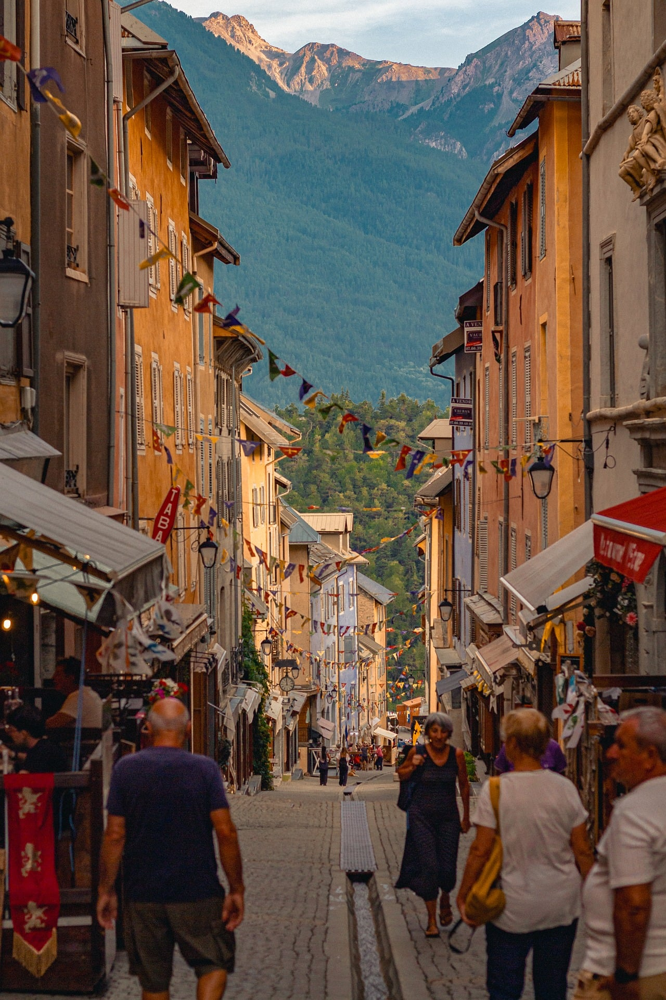

一份从阿尔卑斯山城街道里提取出来的配色与元素系统。暖色近、冷色远，光来自画面最深处，一条一点透视的走廊。用于视频与演示文稿。
一条窄到只容两个人的石板路，两侧的赭石色房子一路退向远处，屋檐、招牌、窗板、彩旗的边线全都指向画面中央偏上的同一个点。 尽头撞上一整块青绿色的山——森林从山脚爬到山腰，山顶的岩壁被西斜的太阳照成了暖粉色。彩旗一串接一串横跨在街道上空， 反复出现，是这张图里唯一有节奏感的东西。街面上有人：背包的、拎菜的、坐着喝东西的，背光成暗色剪影压在画面最前面。
这是五套里唯一有强透视的一套，也是唯一让颜色承担空间分工的一套：暖色永远在近处，冷色永远在远处。 前面四套的颜色都只是情绪，这套的颜色是坐标系。
暖色（赭石、橙、红）永远属于近处的、人的、生活的东西；冷色（山青、林绿）永远属于远处的、自然的、安静的东西。不要用暖色画远景，也不要用冷色画前景——这条一破，纵深立刻消失。
光在巷子尽头的山口上，两侧建筑挡住了它。所以近处反而暗、远处才亮，跟常规的「近亮远淡」正好相反。构图时把最亮的一块放在画面纵深方向，四周用暗色包夹。
屋檐、街沿、旗串、招牌的斜线全部指向中央偏上的一个点。版式上不要另起一套对齐逻辑——沿用灭点做居中，或用左右夹持的「峡谷式」布局。
整张图只有店招和雨棚用了高饱和红（#C6392C），面积极小却最跳。这是五套里唯一一个「一点高饱和压住整片暖色」的音量结构，红色总量务必 ≤8%。
照片最前面是背光的人。压住画面底部的应该是一层暖黑色的剪影或暗带，而不是前面几套那种纯色矩形——人形的轮廓读起来比色块热得多。
五套里节奏最快的一套：旗在飘、招牌在晃、人在走、云影在掠过街面。背景循环 8–12 秒（冰川那套是 50 秒）。这套语言里静止等于拍废了。
九色。前五个是「近处」的暖色系，中间两个是「远处」的冷骨架，最后两个是光。
#E3B463#C98B3F#B4572C#C6392C#4A3628#4E7360#2F4A3A#E9C79A#F2E9DA| 色族 | 阶梯（从左至右，由亮到暗） |
|---|---|
| 石灰白 · 暖米 | #FDF8EE · #F8F0E0 · #F2E9DA · #E8D9BF · #DCC9A6 |
| 蜜墙黄 | #F0D19A · #E9C27C · #E3B463 · #D3A14D · #C08F3C |
| 赭石 / 陶土 | #DE9E52 · #C98B3F · #B4572C · #9A4722 · #7C381C |
| 红 · 暗棕 | #DE5A44 · #C6392C · #5C4634 · #4A3628 · #2A1E16 |
| 远山 · 森林 | #7C9A88 · #648874 · #4E7360 · #3D5B4C · #2F4A3A |
暖画布上的顺序：暖色排主体，冷色排对照，红色只钉一个极值。
| 语义 | 用色 | 说明 |
|---|---|---|
| 主序列 | 赭石 | 被讨论的那一组。比蜜墙黄深一档，才能在暖底上立住 |
| 结论 / 极值 | 招牌红 | 全页只允许出现一次，用来钉住最终的那个数 |
| 次序列 / 对照 | 远山青 | 同期、均值、参考线——冷色天然读作「背景/别人」 |
| 强调段 | 陶土橙 | 需要单独指出的一段，比红色轻、比赭石重 |
| 面积 / 基座 | 蜜墙黄 | 堆叠面积的最底层、大块背景填充（只做面不做点） |
| 缺失 / 未填 | 沙色 | 用比画布深一档的暖灰表示空缺，不用描边 |
底 #F2E9DA，文字 #3E2C20（对比 10.3:1）。暖白，不是冷白也不是纯白——纯白会让赭石显得脏。
底 #4A3628，文字 #FBF3E2。用于金句、章节扉页、以及每页底部那条背光剪影带。这一层同时是「前景」。
底 #2F4A3A，暖色元素放上去会强烈弹出。用在需要「跳出暖色调」的场合——比如结尾、转折、或需要冷感的单页。
这张照片中间亮、两侧暗。压字选中央的暖亮区（墙面或谷口光），两侧建筑上不要压字。深色照片先提亮，这张要的是保住暖度，别去饱和。
| 规则 | 做法 |
|---|---|
| 暖近冷远不能反 | 暖色只用于近处与当下的内容；冷色只用于远处、参考、背景、别人。一旦用冷色画主体，整套的空间逻辑就废了。 |
| 蜜墙黄只做面，不做点 | #E3B463 与画布对比仅 1.7:1，做小色块会直接糊掉。需要被看清的标记一律用赭石或更深。 |
| 红色总量 ≤ 8% | 红色是这套唯一的音量峰值，多一处就变成「促销海报」。一整页只允许一个红色元素。 |
| 不用冷中性灰 | 所有中性色必须是暖灰（偏黄偏棕）。掺进一点冷蓝就变成了老照片发霉的感觉，跟这套的暖光完全不同。 |
| 暗色只在两侧和底部 | 背光是这套的现实：暗色只出现在画面左右两缘和底部，中间那条纵深走廊必须留给亮色。 |
| 谷口暖光只出现一次 | #E9C79A 代表远处的那束光。它只能有一个，出现在纵深方向上；到处发光就没有纵深了。 |
| 用途 | 最低对比 | 检查方式 |
|---|---|---|
| 正文 | 4.5 : 1 | 暗棕在石灰白上 10.3:1，很宽裕；蜜墙黄上放暗棕也有 5.9:1，可以直接用。 |
| 大标题（≥32px） | 3 : 1 | 招牌红在石灰白上 4.7:1，够用；放在蜜墙黄上只有 2.7:1，只适合大字。 |
| 图表面积色 | 1.5 : 1 起 | 暖色之间明度差很小，面积必须配标注或描边，不能靠颜色区分两组暖色。 |
| 关键信息 | — | 颜色 + 位置 + 标签三者至少占其二。 |
中文 思源黑体 Bold / Heavy；英文 Söhne / Inter / Helvetica Neue Bold。字重 600–700，是五套里最重的一档——暖色底本身有重量，细字会被吃掉。
店招感的连笔或毛笔字体，只用于 6 字以内的标签、店名、副标。不超过页面的 5%，用多了会从「山城小店」滑向「婚礼请柬」。
| 层级 | 字号 | 字重 | 字距 | 行距 |
|---|---|---|---|---|
| 主标题 Display | 96 – 132 px | 700 | −1% | 1.10 |
| 章节标题 H1 | 56 – 68 px | 700 | 0 | 1.18 |
| 二级标题 H2 | 34 – 40 px | 600 | +1% | 1.30 |
| 正文 Body | 24 – 28 px | 400 | +1% | 1.70 |
| 数据数字 Metric | 110 – 170 px | 700 | −2% | 1.00 |
| 手写标签 | 18 – 22 px | 600 | +6% | 1.40 |
| 注解 Caption | 17 – 18 px | 500 | +8% | 1.60 |
| 标题收紧，正文放松 | 大标题字距 −1% 到 −2%（暖色密集，收紧更有力）；正文 +1%、注解 +8%。跟冰川那套正好相反——那里是空气稀薄，这里是摊位挤满。 |
| 粗细对比可以很大 | 700 标题配 400 正文，中间不设 500 过渡也行。这套是五套里唯一允许「喊」的。 |
| 行长更短更碎 | 一行中文最多 18 字，但允许换行成两三行的短句块——街上的招牌都是一小截一小截的。 |
| 可以左对齐也可以居中 | 中央透视线是天然的中轴，居中不别扭。左右夹持时用左对齐贴内缘。 |
| 数字用等宽 | 全部等宽老式数字；极值数字可以套红色，但一页只有一处。 |
| 手写体只做标签 | 手写体不参与层级体系，它是贴在东西上的，不是排出来的。 |
五套里唯一横向夹持的版式。前四套要么上下分层（冰川），要么整屏铺满（牧场/海面），这套是左右两条暗带夹出一条中央走廊。
暗棕渐变带，从边缘最实到 40% 处淡出。放极简的竖向元素：章节序号、竖排小字、进度。它是「挡住光的建筑」。
同上，镜像。可以放页码、数据来源、时间戳。两侧不要求对称内容，只要求对称的暗度。
唯一的信息区，也是唯一允许亮色的地方。所有内容左对齐到同一条竖轴，或居中到灭点。
走廊里允许有一处柔边的暖光斑（#E9C79A 62% 不透明度向外淡出），位置在纵向 30%–40%。这是全页唯一的高光，也是视线终点。
| 画幅 | 规则 |
|---|---|
| 16:9（视频/PPT） | 峡谷各占 19%，走廊 62%，允许 ±3% 浮动。灭点固定在横向 50%、纵向 32%——全页所有斜线都指向它。 |
| 9:16（竖屏） | 改成上下分工：上方 34% 冷（山/天/远景），下方 66% 暖（街/人/近景）。中轴留一条由窄到宽的灭点线（clip-path 梯形），底部红色标签正好落在平台 UI 遮挡区之上。 |
| 峡谷不是页边距 | 注意区别：这两条暗带是画面的一部分（建筑），不是留白。它们需要颜色和渐变，不能是空白的边距。 |
五套里最密的一套。单屏可以有 3–4 个信息块；边缘留白 96px（比冰川少 14px）。画面应该是「被填满的」，但要填得整齐。
卡片 3–4px，标签用直角。这套的形状语汇是「砌出来的」——砖、石板、窗框，都是方的。
投影用暖棕：0 6px 22px rgba(62,44,32,.20)，比冷影更实更近。红色和暖光元素外侧可以加一圈 0 0 24px rgba(233,199,154,.35)。
暖色系里描边容易脏。靠明度差分层（蜜墙黄 → 赭石 → 陶土 → 暗棕），需要边界时用暖影或一条 2px 的暗棕细线。
所有图形元素从这六个母题里来。第一个是签名元素，也是其他四套里最没有的东西——它给画面提供节奏。
| 颗粒偏暖 | 整页叠 4%–5% 暖棕噪点。比冰川那套重一倍、比海面轻——石板路和灰墙有颗粒感，但不是脏。 |
| 不做虚化分层 | 这张照片只有最前面的人略虚，中后景全是实的。纵深靠透视 + 明度表达，不要用模糊。 |
| 暖影，不用发光 | 浅底上投影是 0 6px 22px rgba(62,44,32,.20)。发光只留给红色与谷口暖光这类光源性元素。 |
| 图标 | 线性图标 stroke 1.5–1.8px，圆头，偏重。优先用旗、牌、门、窗、杯这五类市井题材，避开科技与几何抽象图形。 |
| 形状语言是「砌」 | 直角、砖块、层层退进的方框。圆角只到 3–4px，不做胶囊、不做大圆角。 |
核心是画面永远是活的。旗在飘、招牌在晃、人在走、云影掠过街面。背景循环 8–12 秒——五套里最快的一档，比冰川快了四倍。这套语言里「静止」等于拍废了。
| 用途 | 动作 | 时长 | 缓动 |
|---|---|---|---|
| 旗串飘动 | 每面小旗绕绳轴摆动 ±8°，相邻旗相位错开 0.2–0.4s | 2.4 – 3.6 s | ease-in-out |
| 整串浮动 | 整条旗串轻微上下浮沉，幅度 ≤ 6px | 6 – 9 s | ease-in-out |
| 招牌摇摆 | 悬挂招牌绕顶部支点左右摆 ±4° | 3 – 4 s | ease-in-out |
| 镜头前推 | 内容沿透视线由中心向外扩散：scale 1 → 1.04 + 轻微位移 | 8 – 12 s | linear |
| 元素入场 | 从「巷子深处走来」：scale .92 → 1 + 淡入 | 600 – 800 ms | cubic-bezier(.2,.9,.3,1) |
| 章节转场 | 沿透视线前推穿过：缩放放大 + 淡出，不是滑动 | 700 – 900 ms | cubic-bezier(.4,0,.2,1) |
| 云影掠过 | 一条低对比暗带从左到右缓慢扫过，模拟云影 | 10 – 14 s | linear |
| 五套里最快的一档 | 背景循环 8–12 秒。前面几套是 50s（冰川）/ 20s（海面）。市集是活的，慢下来就不像了。 |
| 运动方式是「摆」，不是「移」 | 旗、招牌、灯笼都在绕某个轴摆动，起点和终点是同一个位置。纯平移只留给镜头推进。 |
| 转场用「推进」 | 这是五套里唯一有镜头语言的一套——沿透视线的 dolly in。既不是雾（冰川），也不是波纹推移（海面）。 |
| 入场从远处来 | 小 → 大 + 淡入，而不是从下方升起。元素应该像从巷子深处走过来。 |
| 只做位移、缩放、旋转、透明度 | 允许旋转（旗和招牌必须转），但限度是 ±8°。不做 3D 翻转、不做弹跳。 |
这张照片中间亮、两侧暗。压字选中央的墙面或谷口光；两侧背光建筑上不要压字，那里是峡谷。
统一调色：曝光 +0.15、对比 +6、高光 −6、阴影 +8、色温 +6（偏暖）、橙色饱和 +8。不要去饱和——这张图的魅力就在密度。
这张有强透视和明确的视觉中心，满版铺图能到总页数的 1/3，比冰川那套（1/4）高。透视本身足够抓眼，不怕撑不住。
内容可以顺着透视线排——最近的是「现在/这里」，越远越「未来/背景」。这比线性列表更贴这套语言。
单屏 40–60 字。这套不怕信息多，只怕空——空下来就不像街了。
优先用：巷子中段（有旗串没人的）、墙面特写（窗板/招牌）、山口远景（纯山 + 光）。避开有清晰人脸的画面。
| 城市、旅行、市集 | 目的地介绍、街区改造、文旅项目、城市漫游、餐饮与生活方式。暖色 + 市井母题天然贴题。 |
| 纵深与推进 | 「从 A 到 B」的任何内容：roadmap、路径、发展阶段、空间序列。一点透视是现成的结构图。 |
| 小生意与人 | 个体经营、街区商业、小店故事、手艺人。这套的五官是热的。 |
| 节日与活动 | 旗串的语义就是「在过节」。会展、节庆、市集活动、开街。 |
| 不适合 | 需要冷静中立的场合（审计、医疗、严肃研究）——暖度太高会显得轻。这类内容交给冰川那套。 |
直接粘进 HTML / 视频工程的样式表，命名与前面的色卡一一对应。
/* Chloe Dupré · 赭石街巷 · v1 */ :root { /* 近处 · 暖色系 */ --bone: #F2E9DA; /* 石灰白 · 默认画布（暖白） */ --card: #FAF4E8; /* 卡片浮层 */ --sand: #E8D9BF; /* 沙色 · 分区/缺失 */ --ochre: #E3B463; /* 蜜墙黄 · 主色，只做面 */ --terrace: #C98B3F; /* 赭石 · 主数据序列 */ --terracotta: #B4572C; /* 陶土橙 · 强调面 */ --sign: #C6392C; /* 招牌红 · 唯一高饱和，≤8% */ --shade: #4A3628; /* 暗棕 · 正文/背光/剪影 */ /* 远处 · 冷骨架 */ --pine: #4E7360; /* 远山青 · 对照/结构线 */ --forest: #2F4A3A; /* 深林绿 · 深底/冷底 */ /* 光 */ --glow: #E9C79A; /* 谷口暖光 · 一页仅一处 */ /* 文字 */ --txt: #3E2C20; --txt-2: #6B5544; --txt-3: #9A8674; /* 峡谷式构图 */ --canyon: 19%; /* 左右暗带 */ --corridor: 62%; /* 中央走廊 · 唯一信息区 */ --vanishing-x:50%; /* 灭点横向 */ --vanishing-y:32%; /* 灭点纵向 */ /* 形状与光影 */ --radius: 3px; /* 直角为主 */ --shadow: 0 6px 22px rgba(62,44,32,.20); /* 暖影 */ --glow-ring: 0 0 24px rgba(233,199,154,.35); --line: 1px solid rgba(62,44,32,.14); --bunting-sag: 8%; /* 旗绳下垂 */ --grain: .045; /* 暖棕噪点 */ /* 字体 · 五套里最重的一档 */ --weight-display: 700; --weight-body: 400; --tracking-display:-.01em; /* 标题收紧 */ --tracking-body: .01em; --tracking-caption:.08em; /* 节奏 · 五套里最快 */ --ease-swing: ease-in-out; --ease-walk: cubic-bezier(.2,.9,.3,1); --t-in: 700ms; --t-push: 900ms; /* 章节前推转场 */ --t-flag: 3s; /* 旗串摆动循环 */ --t-drift: 10s; /* 镜头前推 / 云影循环 */ --swing: 8deg; /* 摆动上限 */ }
四个典型版式，可直接当模板用。